Planning Context
어떤 기획이었나
- 교환형 콘텐츠는 상품, 비용, 갱신, 조건이 동시에 노출되어 정보 우선순위가 흐려지기 쉽습니다.
- 레벨 갭과 비용 표기가 명확하지 않으면 유저가 교환 가능 여부를 판단하기 어렵습니다.
ProjectN · Exchange UX
물물교환 노점의 상품 정보, 갱신 비용, 교환 조건, 레벨 갭 안내를 정리한 시스템 UX 사례입니다.
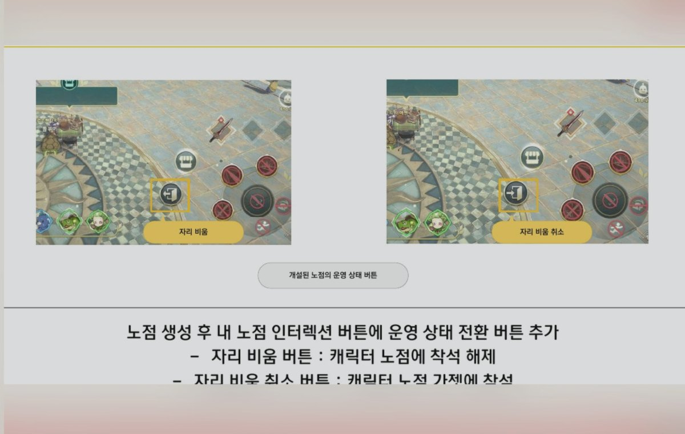
Planning Context
Process
Deliverables
Result
교환형 콘텐츠의 상품 정보와 비용 판단 흐름을 정리해 유저가 교환 가능 여부를 더 쉽게 이해하도록 했습니다.
Deliverable Captures
원본 문서는 포함하지 않고, 포트폴리오 확인용으로 일부 페이지만 이미지화했습니다. 슬라이드 마스터/상하단 영역은 흐림 처리했습니다.
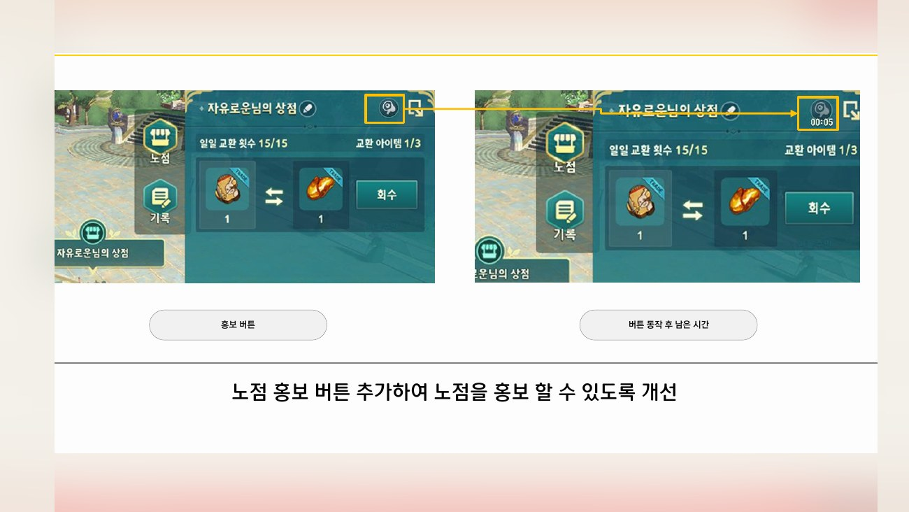
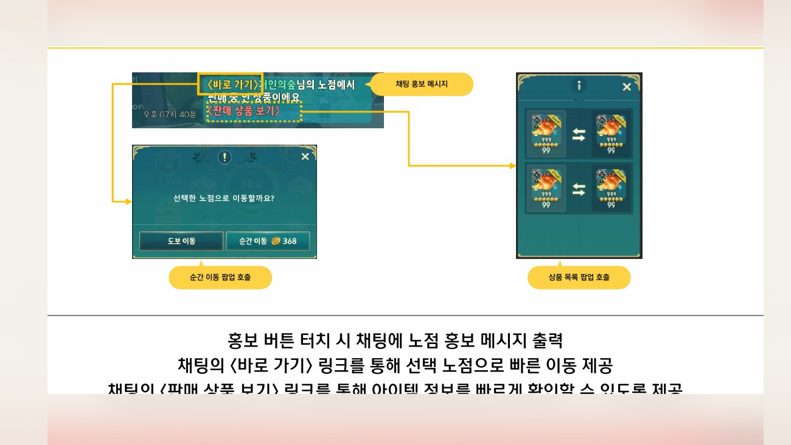
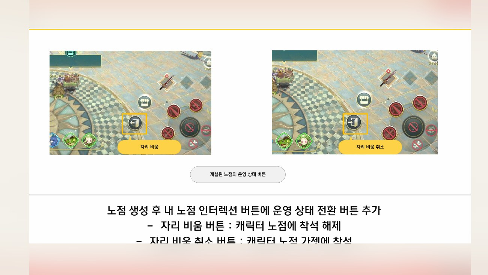
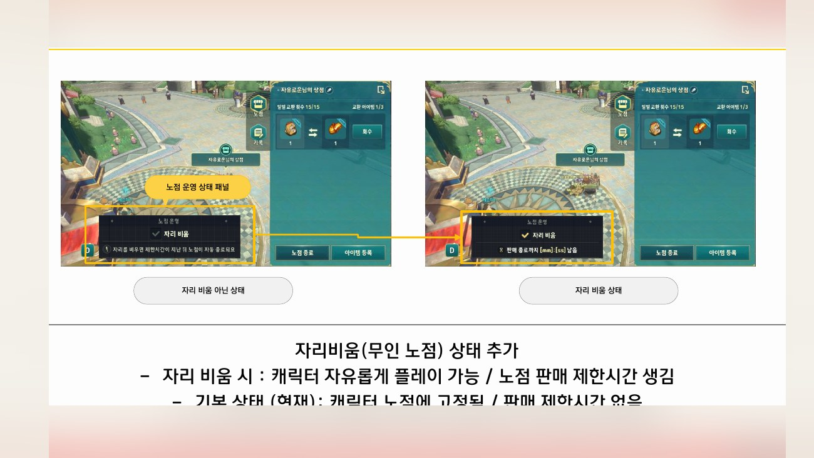
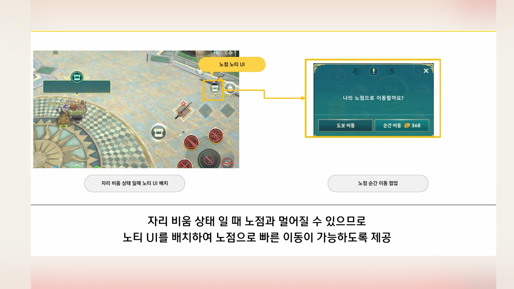
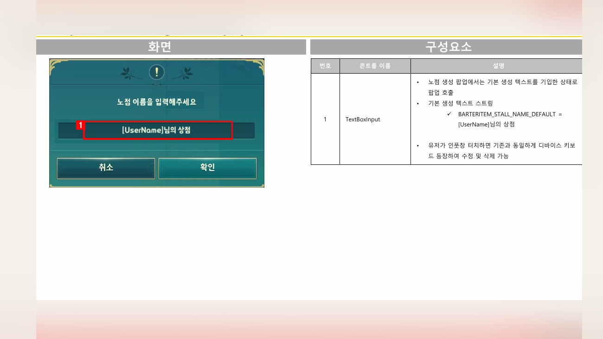
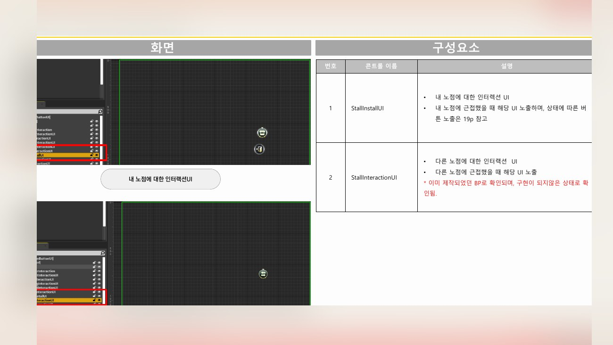
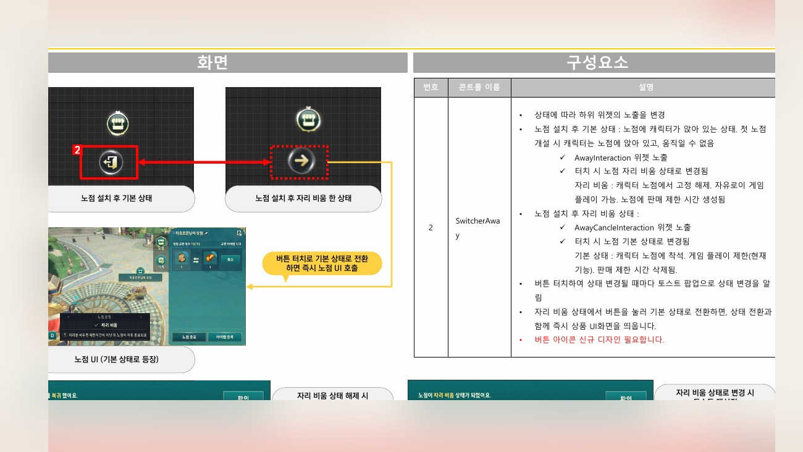
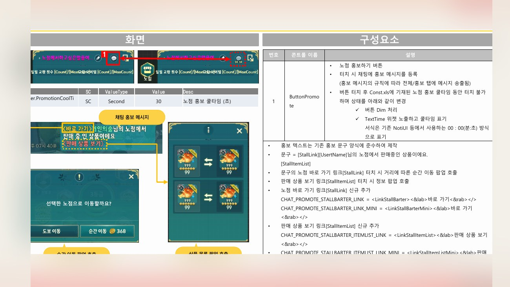
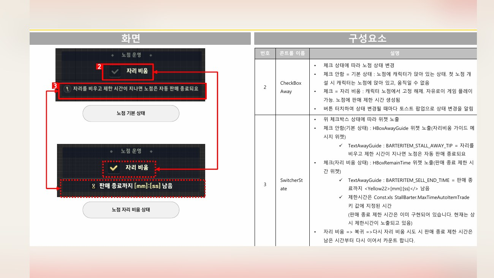
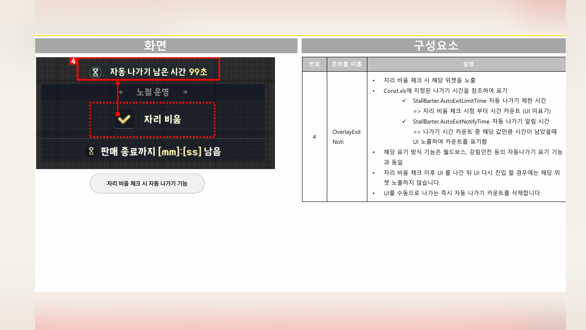
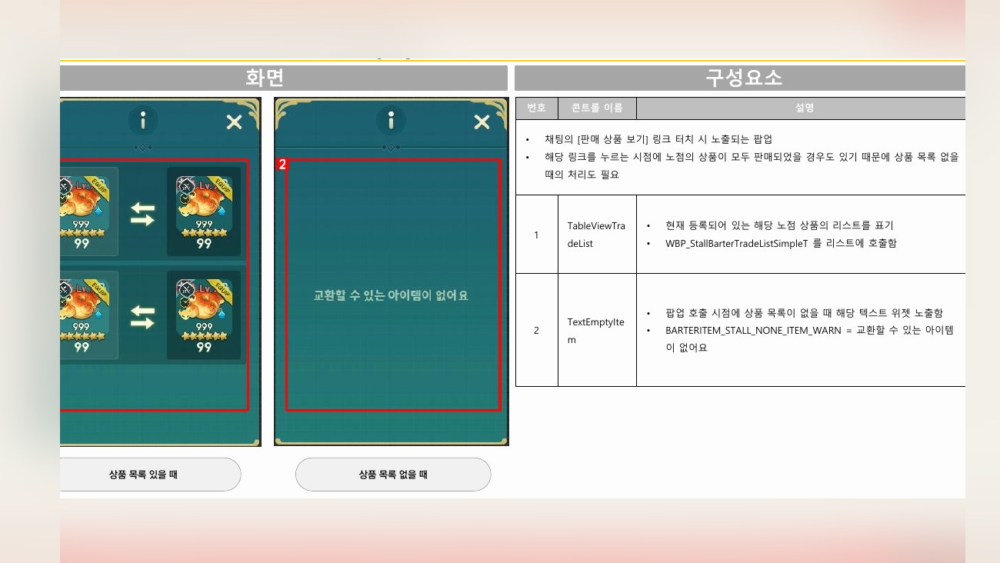
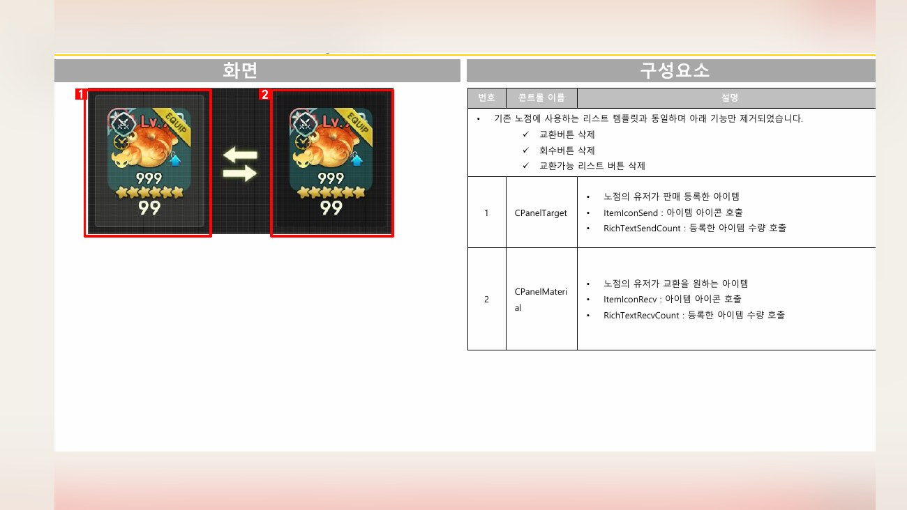
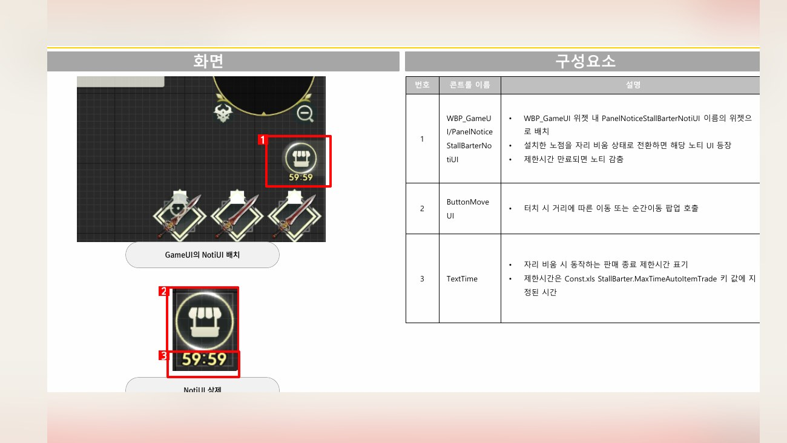
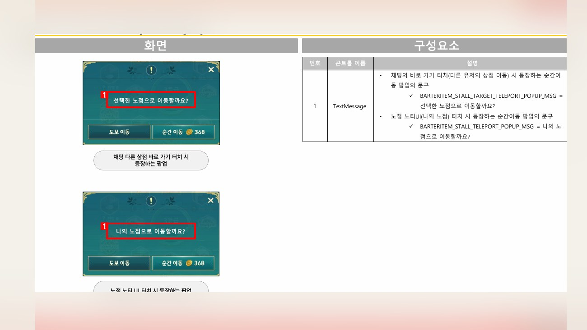
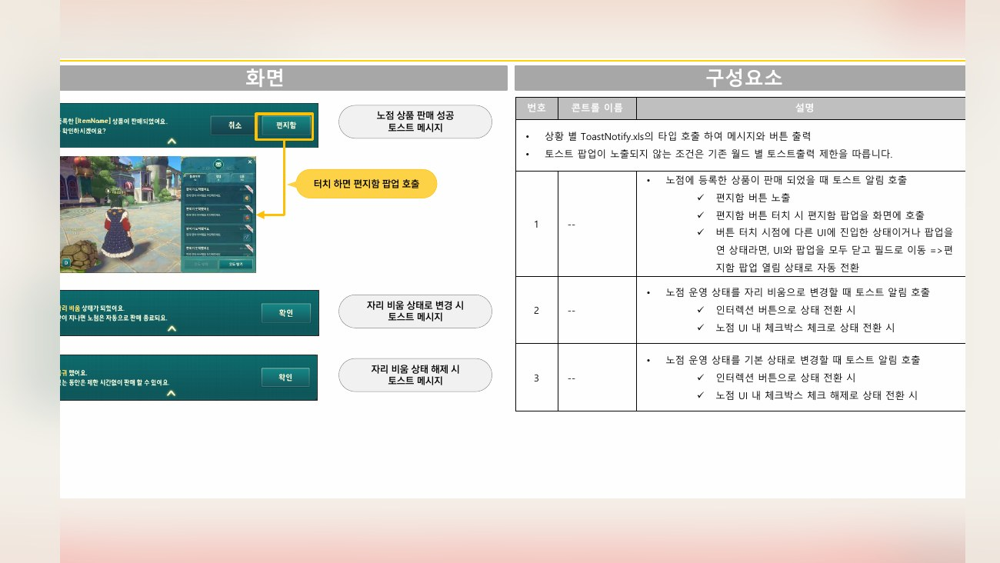
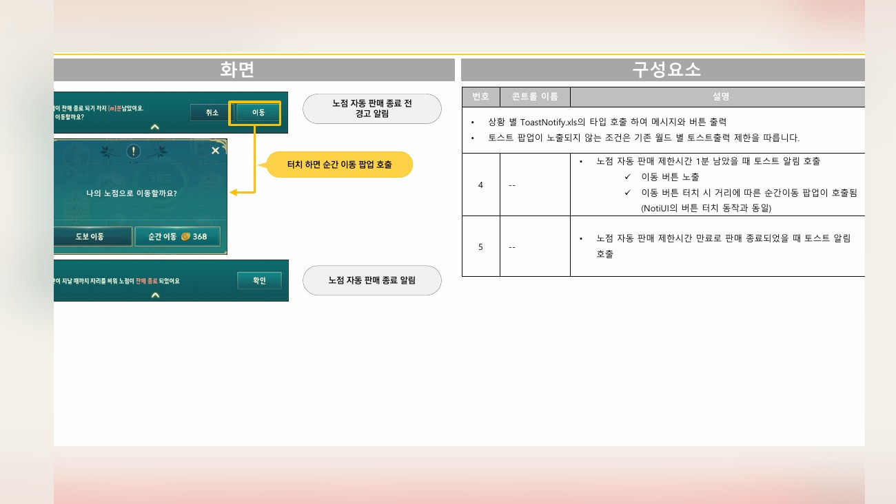